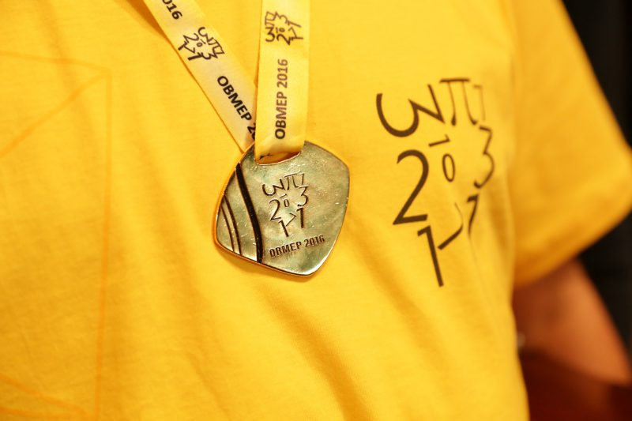

talvez seja por nao quererem quebra a cabeca com ela sendo que a matematica nao e tao dificil assim so bastanta o comprometimento de cada um
dizem que o esforco sempre vence o talento, gosto desse argumento, eu nunca quis ser melhor que ninguem apenas tive o comprometimento
como uma prova de que o esforço sempre vence, abaixo está o keiso que ganhou a medalha de bronze do ano de 2021
Ele disse algo apos ganhar "eu sou o mior e lala é feia" nao sabemos quem é essa "lala" mas esssa foi a declaração do medalhista keirrison que apos isso saiu nas ruas pelado gritando "lala é feia" disse o homi
Desenvolvido por Keirrison